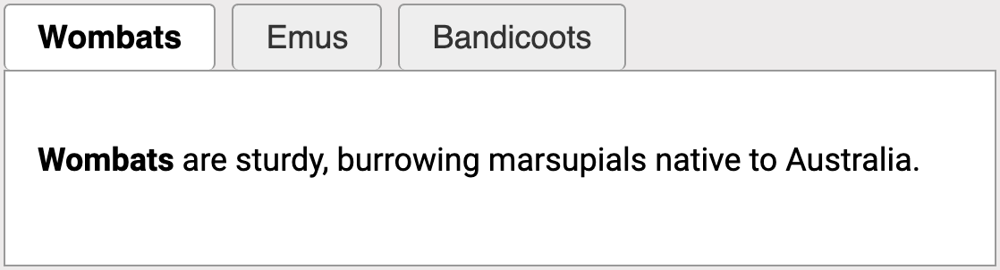

A tab panel
Imagine a page with a set of tabs labelled "Wombats", "Emus" and "Bandicoots". Each tab reveals a different panel with content related to the tab.

For a sighted user, the relationship between the tabs and panels may be obvious because selecting a tab visibly changes the content nearby.
But for assistive technology users, that relationship may not be as obvious.
aria-controls can be used to explicitly define the relationship between two elements.
In this case, each tab controls a panel below.
What aria-controls does
aria-controls identifies another element that is controlled by the current element.
In the following example, the aria-controls value matches the id of the element being controlled. This creates a programmatic relationship between the two elements.
<!-- Button -->
<button aria-controls="details">
Show details
</button>
<!-- Panel -->
<div id="details">
...
</div>aria-controls can reference more than one element. In the following example, the button controls two panels:
<!-- Button -->
<button aria-controls="details1 details2">
Show details
</button>
<!-- Panel -->
<div id="details1">
...
</div>
<div id="details2">
...
</div>What aria-controls does not tell you
aria-controls does not affect the appearance or behaviour of either element. It does not control whether elements open, close, show or hide. Something else, such as JavaScript, is needed to make those changes happen.
It also does not tell assistive technology whether the controlled content is currently visible.
If a control expands and collapses content, aria-expanded is generally used to communicate the current state.
aria-controlsdescribes the relationship.aria-expandeddescribes the state.
When aria-controls is useful
aria-controls is useful when one element controls or changes another element, and making that relationship explicit can help assistive technologies understand how the elements are connected. For example:
- A tab controls its associated tab panel.
- A toolbar button controls a sidebar elsewhere on the page.
- A button controls a panel in another part of the page.
In these cases, aria-controls provides an explicit programmatic connection between the controlling element and the element it affects.
Support
Even when aria-controls is set up correctly, assistive technology may not announce it. Support for the attribute has always been inconsistent. It also does not tell users what the relationship means, only that a relationship exists.
JAWS has historically provided the strongest support. Up to JAWS 2019, there was a setting to announce the presence of aria-controls, but that setting was removed from JAWS 2020 onward (Accessibility Support: aria-controls test results).
Other screen readers have historically offered little or no support. Testing over the years has also produced different results depending on the browser and screen reader version (Léonie Watson, "Using the aria-controls attribute"; Heydon Pickering, "Aria-Controls is Poop").
Because of this, don't rely on aria-controls as the only way to connect a control to what it affects. Use other techniques where appropriate:
- Move keyboard focus into revealed content when that makes sense, so users can find the new content without relying on
aria-controls. - Use
aria-expandedto communicate whether content is expanded or collapsed. It is better supported thanaria-controls.
aria-controls is still worth adding. It does no harm when assistive technology does not support it, and it may help users when it does.
Wrapup
aria-controls answers the question: "What does this control affect?"
Use it to create an explicit relationship between a control and the element or elements it affects. Don't rely on it alone, since assistive technology support for actually conveying that relationship to users is inconsistent.